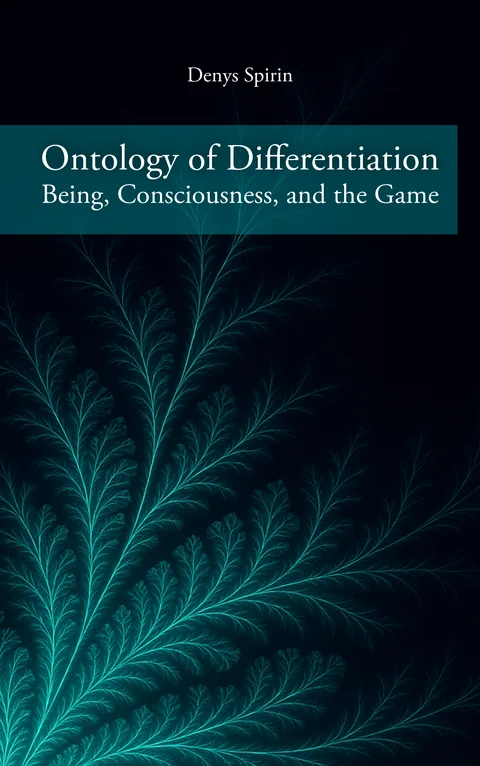

2025
Ontology of Differentiation: Being, Consciousness, and the Game
An ontological framework centered on the primacy of differentiation as the basis of being, consciousness, and relationality. It articulates a layered model of reflexive differentiation (R0–R7), charting the emergence of complexity from biological individuation to ethical recognition and ultimately to the open Game of difference. Every act of differentiation is shown to be an expression of Potentiality — a groundless, inexhaustible source of possibility — dismantling hierarchical metaphysical frameworks in favour of a field of infinite freedom where difference resonates without domination.